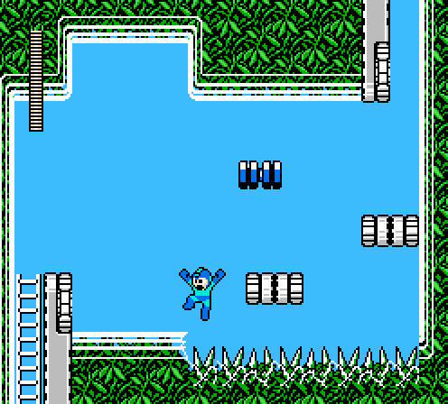
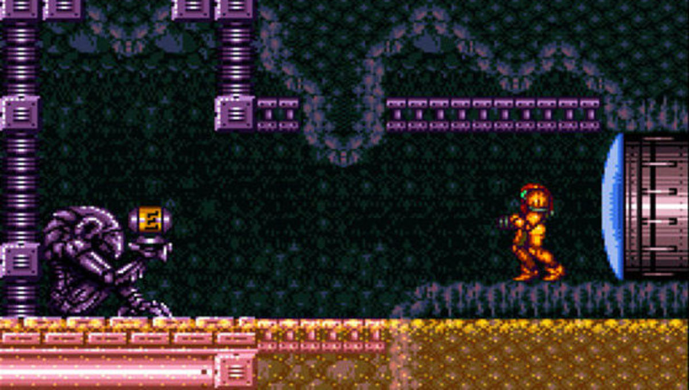

When a person picks up a video game, the visual style and story are usually some initial features they look at. But a big part of every game is the choices a player has to make in-game. You control the timing of your character, you decide how far you want to reach, and you feel when your choices succeed or fail.
Platformer
Megaman is a popular and famously difficult platformerThe "Platformer" was really established in the 8-bit era. It is identifiable by having a central character, controlled by the player, with the sole task of moving from a starting point to a finish point. This is often across platforms with falls between them. Difficulty depends on the reach of the character's jump or tool (such as a rope), and the relative placement and stability of the platforms. Platformers are almost always broken into thematic levels which are largely self-contained.
Metroidvania
Samus finds a power up.The "Metroidvania" is named after two games with similar elements. Metroid, released in the U.S. in August of 1986, and Castlevania; specifically Castlevania: Symphony of the Night, released in the U.S. in March of 1997. These games are still influential today, decades after their release, having left an indelible mark on the game developers of today. Metroidvanias have one large map instead of multiple levels. You have to unlock new areas by finding items that make your character stronger. And you have to cross back and forth through the map as it opens to find those items, a practice called "backtracking".
Survival Horror
 Jill Valentine watching for zombies
Jill Valentine watching for zombies
The "Survival Horror" has made a lot of changes since Resident Evil (RE) was first introduced in 1996. It was originally based on adventure games, which were almost exclusively puzzles you would solve with a mouse or typing prompt. With more powerful hardware, the RE devlopers were able to add real time movement and could let the player character target objects. Players could now feel apprehensive because their actions were realized in the game, and the consequences were fast and dire. You managed an inventory like adventure games, but the stakes were higher. It was easy to immerse yourself in the music and atmosphere and be startled by things that jumped on screen. Today, they ahve largely devolved into action games, which involve fewer puzzles and more running around and shooting things.